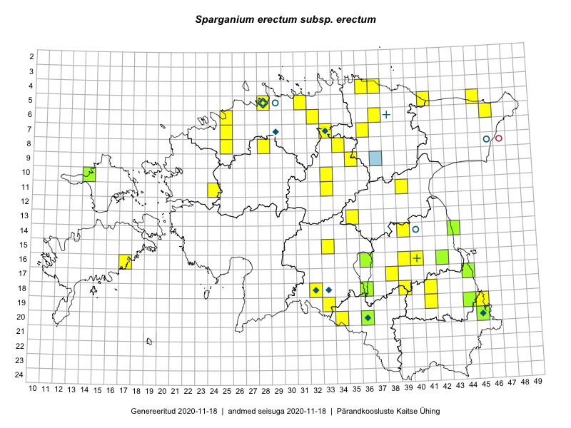

Sparganium erectum subsp. erectum — haruline jõgitakjas (tüüpalamliik)
Kaardile koondatud taksonid: Sparganium erectum subsp. erectum L. (46)

Kaart põhineb 46 kirjel, neist:
vaatlusi 35
eksemplare 11
Kaasaegsed1 leiukohad asuvad 37 ruudus.
Andmed “Eesti taimede levikuatlasest”,2 sulgudes ruutude arv:3
● 1971–2005 (0)
○ 1921–1970 (1)
△ kuni 1920 (0)
+ hävinud (0)
? kaheldav (0)
Lisaruudud teistest andmebaasidest:4
ELF: 2006– . . . (0)
PKÜ: 2006– . . . (0)
ELF: 1971–2005 (0)
PKÜ: 1997–2005 (0)
| Ruut | Vaatleja(d) | Vaatlusaeg | Kirje PlutoFis |
|---|---|---|---|
| 20-45 | Katrit Karus, Tõnu Feldmann | 2015-07-27 | ruut/ala: Sparganium erectum subsp. erectum L. |
| 20-34 | Tõnu Feldmann, Katrit Karus | 2015-07-30 | ruut/ala: Sparganium erectum subsp. erectum L. |
| 19-45 | Katrit Karus, Tõnu Feldmann | 2015-07-27 | ruut/ala: Sparganium erectum subsp. erectum L. |
| 19-33 | Katrit Karus, Tõnu Feldmann | 2015-07-27 | ruut/ala: Sparganium erectum subsp. erectum L. |
| 13-35 | Katrit Karus, Tõnu Feldmann | 2015-08-05 | ruut/ala: Sparganium erectum subsp. erectum L. |
| 07-36 | Katrit Karus, Tõnu Feldmann | 2015-08-07 | ruut/ala: Sparganium erectum subsp. erectum L. |
| 07-36 | Katrit Karus, Tõnu Feldmann | 2015-08-07 | ruut/ala: Sparganium erectum subsp. erectum L. |
| 07-33 | Katrit Karus, Tõnu Feldmann | 2015-08-07 | ruut/ala: Sparganium erectum subsp. erectum L. |
| 06-32 | Katrit Karus, Tõnu Feldmann | 2015-08-04 | ruut/ala: Sparganium erectum subsp. erectum L. |
| 05-31 | Katrit Karus, Tõnu Feldmann | 2015-08-04 | ruut/ala: Sparganium erectum subsp. erectum L. |
| 19-44 | Toomas Kukk | 2014-07-09 | ruut/ala: Sparganium erectum subsp. erectum L. |
| 14-39 | Erkki Otsman, Sergei Smirnov | 2015-07-21 | ruut/ala: Sparganium erectum subsp. erectum L. |
| 16-40 | Kadi Palmik, Helle Mäemets | 2015-07-22 | ruut/ala: Sparganium erectum subsp. erectum L. |
| 06-25 | Mari Metsoja, Jaak-Albert Metsoja | 2015-07-25 | ruut/ala: Sparganium erectum subsp. erectum L. |
| 09-35 | Kadi Palmik, Helle Mäemets | 2015-07-21 | ruut/ala: Sparganium erectum subsp. erectum L. |
| 15-33 | Kadi Palmik, Helle Mäemets | 2015-08-14 | ruut/ala: Sparganium erectum subsp. erectum L. |
| 08-28 | Erkki Otsman, Sergei Smirnov | 2016-07-17 | ruut/ala: Sparganium erectum subsp. erectum L. |
| 11-24 | Helle Mäemets, Tiina Elvisto | 2016-07-06 | ruut/ala: Sparganium erectum subsp. erectum L. |
| 06-46 | Katrit Karus, Tõnu Feldmann | 2017-08-09 | ruut/ala: Sparganium erectum subsp. erectum L. |
| 08-34 | Katrit Karus, Tõnu Feldmann | 2017-07-07 | ruut/ala: Sparganium erectum subsp. erectum L. |
| 06-37 | Katrit Karus, Tõnu Feldmann | 2017-07-07 | ruut/ala: Sparganium erectum subsp. erectum L. |
| 11-39 | Tõnu Feldmann, Katrit Karus | 2017-07-04 | ruut/ala: Sparganium erectum subsp. erectum L. |
| 11-33 | Tõnu Feldmann, Katrit Karus | 2017-07-03 | ruut/ala: Sparganium erectum subsp. erectum L. |
| 19-44 | Helle Mäemets, Kadi Palmik | 2017-08-02 | ruut/ala: Sparganium erectum subsp. erectum L. |
| 08-25 | Helle Mäemets, Kadi Palmik | 2017-07-14 | ruut/ala: Sparganium erectum subsp. erectum L. |
| 08-25 | Helle Mäemets, Kadi Palmik | 2017-07-14 | ruut/ala: Sparganium erectum subsp. erectum L. |
| 14-39 | Erkki Otsman, Sergei Smirnov | 2015-07-21 | punkt: Sparganium erectum subsp. erectum L. |
| 18-41 | Kadi Palmik, Helle Mäemets | 2015-08-13 | ruut/ala: Sparganium erectum subsp. erectum L. |
| 19-41 | Kadi Palmik, Helle Mäemets | 2015-08-13 | ruut/ala: Sparganium erectum subsp. erectum L. |
| 04-36 | Katrit Karus, Tõnu Feldmann | 2017-08-10 | ruut/ala: Sparganium erectum subsp. erectum L. |
| 04-37 | Katrit Karus, Tõnu Feldmann | 2017-08-10 | ruut/ala: Sparganium erectum subsp. erectum L. |
| 05-45 | Katrit Karus, Tõnu Feldmann | 2017-08-09 | ruut/ala: Sparganium erectum subsp. erectum L. |
| 05-41 | Katrit Karus, Tõnu Feldmann | 2017-08-09 | ruut/ala: Sparganium erectum subsp. erectum L. |
| 06-46 | Katrit Karus, Tõnu Feldmann | 2017-08-09 | ruut/ala: Sparganium erectum subsp. erectum L. |
| 10-33 | Katrit Karus, Tõnu Feldmann | 2017-07-03 | ruut/ala: Sparganium erectum subsp. erectum L. |
| 16-42 | Peedu Saar | 2015-08-21 | TAA0116534: Sparganium erectum subsp. erectum L. |
| 17-44 | Peedu Saar | 2016-08-24 | TAA0134031: Sparganium erectum subsp. erectum L. |
| 18-36 | Peedu Saar, Mari Metsoja | 2016-07-20 | TAA0134037: Sparganium erectum subsp. erectum L. |
| 19-44 | Kersti Tambets | 2014-07-29 | TAA0112813: Sparganium erectum subsp. erectum L. |
| 16-36 | Peedu Saar, Polina Degtjarenko | 2017-08-05 | TAA0141068: Sparganium erectum subsp. erectum L. |
| 14-43 | Ott Luuk, Peedu Saar | 2017-08-21 | TAA0142803: Sparganium erectum subsp. erectum L. |
| 10-14 | Ott Luuk, Peedu Saar | 2017-09-14 | TAA0142831: Sparganium erectum subsp. erectum L. |
| 20-36 | Ott Luuk, Thea Kull | 2016-08-23 | TAA0147294: Sparganium erectum subsp. erectum L. |
| 20-45 | Peedu Saar, Ott Luuk | 2019-09-24 | TAA0149475: Sparganium erectum subsp. erectum L. |
| 20-45 | Ott Luuk, Tiit Hallikma | 2019-07-10 | TAA0151481: Sparganium erectum subsp. erectum L. |
| 20-45 | Ott Luuk, Tiit Hallikma | 2019-07-10 | TAA0151482: Sparganium erectum subsp. erectum L. |
Kaasaegsed leiukohad (tähistatud värvitud ruutudega) põhinevad peamiselt 2014–2019 välitööandmetel. Väiksemal määral on andmebaasi kantud vanemaid leiuandmeid aastatest 2006–2013.↩︎
Kukk, T., Kull, T., Eesti taimede levikuatlas. Eesti Maaülikool, Põllumajandus- ja Keskkonnainstituut, Tartu, 2005.↩︎
NB! 2005. aasta atlase andmestikus katavad uuemad leiud vanemaid. Näiteks kui liik on ruudus registreeritud 1971–2005, siis pole võimalik öelda, kas ta oli sellest ruudust teada ka enne 1970. aastat. Vana atlase andmetel hävinud ja kaheldavaid leiukohti pole hilisemate (taas)leidude põhjal korrigeeritud.↩︎
Eestimaa Looduse Fondi (ELF) ja Pärandkoosluste Kaitse Ühingu (PKÜ) andmebaasid sisaldavad inventeeritud koosluste kirjeldusi ja liigiloendeid. Neist andmekogudest on kaardile lisatud lisatud vaid need ruudud, millest uue atlase andmekogus taksoni kohta kirjeid veel pole. Kõrvale on jäetud teadaolevalt kaheldavad määrangud. Kaartidel katavad uuema perioodi andmed vanemaid, PKÜ omad ELFi omi. Kattumise tõttu võib kaardil näha olla vähem mingi kategooria ruute kui legendis olev arv näitab. ELFi ja PKÜ andmed ei kajastu hetkel vaatluste tabelis ega ruutude liigiloendites.↩︎